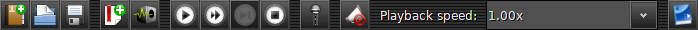
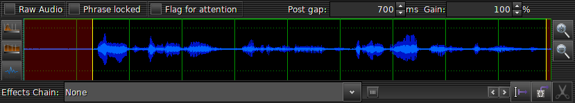
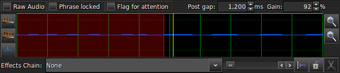

Tutorial
First let's familiarize ourselves with the main window. To start with here's the toolbar at the top of the window:
From left to right we have:New Book, Open Book, Save Book, New Chapter, Record Room Noise, Play Phrase, Play From Phrase, Play Cut Selection, Stop Playing, Enable Microphone, Disable Effects, Playback Speed, Open Manuscript
The very first thing you should do is configure the software to suit your needs. Use the menu entry Tools -> Options and set everything up as you need it. Everything has information icons by them to tell you what they do (just hover over the icon). Most things have sensible defaults, but you will probably need to select your audio devices and format.
The next thing you need to do, of course, is create a new book. Press that icon (or use the menu entry File -> New Book) and fill out the form that pops up.
You're nearly ready to start recording now. But for everything to work you need some room noise. Start by turning on the microphone (rather than starting and stopping the microphone with each recording it was found that some microphones do a gain calibration each time they are started, so starting it just once and keeping it open was found to be a better solution). Now you can record some room noise. Press the Record Room Noise icon and keep quite. The screen will flash red and green while it records (5 seconds).
At the bottom of the window your "noise floor" will be displayed. You want this to be below -30dB for a good recording.
If you want to re-record your room noise just press the icon again. When you're happy with the noise floor you can now start recording your book in earnest.
Recording is now as simple as pressing and holding one of the record buttons and speaking. Release the record button when you have finished speaking.
The record buttons are as follows:
So go ahead and select one of the chapters of your book and press and hold R and speak. Then release R again.
You should see a new phrase has been added to the currently selected chapter. The waveform display at the bottom should have updated to show the content of the phrase and, after a moment or two, should display the automatic trim information (if you have auto trimming turned on). There's quite a lot going on in that waveform display, so let's take a look at it now.
The big central area is obviously the audio waveform. Whether you have mono or stereo as your input this display will always be a single waveform that shows the average of both channels. The area between the red is the live audio section that will play. The red areas are the trimmed off areas. The yellow lines are the requested trim points. Now, it's important to know that the yellow lines are not the ends of the red areas - they are where you (or the auto trimmer) has requested that the sample be trimmed. But that is most likely not where it will actually be trimmed. Instead it will be trimmed at the nearest positive-going zero crossing (that's a point at which the sample values go from negative to positive). That is where the ends of the red area will actually be. You can see it better if you zoom in (which you can do with the zoom in and zoom out icons on the right hand side of the waveform):
Now you can see that the end of the red is not the same as the yellow line. You can drag the yellow lines around to adjust the trim points.
Ok, so what else is there around the waveform? Well, let's take the top line first.
Raw Audio - This checkbox will cause the waveform to display unprocessed audio. That is, audio without any effects applied. Useful if your computer is a little slow or you have some very complex effects that take a while to process.
Phrase locked - If this is turned on the phrase can't be modified. The phase is coloured blue in the tree view and you can't change the trim points or perform any other operations on the waveform. It prevents any accidental edits from happening.
Flag for attention - This is purely for your convenience. It allows you to flag a phrase as needing attention. You can then find it easily later on to adjust it.
Post gap - This is how much room noise to add between this phrase and the next. It's measured in milliseconds. It's automatcially set by recording the next sentence, but you can manually tweak the timing to get your phrases to flow better.
Gain - Just what it says: the gain (or volume) applied to this sample. You can also adjust this value using the mouse wheel over the waveform itself.
That's all pretty straight forward. Now, on the left are three buttons for auto-processing the sample. The top two are for setting the trim points, the upper being FFT based cropping, and the middle using an amplitude detection method. Below that is the "normalize" button. This will attempt to get the peak amplitude of the sample to be -3dB by automatically adjusting the gain for you. However this will not raise the gain above 100%. To do that you will have to adjust it manually.
While we're talking about gain and -3dB, the waveform will indicate to you any points that exceed the -3dB threshold by colouring them in red to make it obvious where your peaks are that require attention.
Along the bottom you have a dropdown box to select an effect to apply to this phrase. See the page on effects for working with effects.
Next to that is the scrollbar for moving around the sample if zoomed in, and next to that are the splitting and cutting tools.
Split - This will allow you to split a sample into two separate samples.
Cut - This will allow you to cut out a section of the waveform.
Execute - This will light up when in either the split or cut mode and will actually perform the operation you have selected.
That pretty much covers all the interesting things on the waveform. As you record more phrases you will notice that some have bigger gaps between them in the tree. This gap is related to the type of gap, dictated by the record button used. You can change the gap type, and perform lots of other operations, from the context ("popup") menu on the phrases and chapters. Everything in there is pretty self explanatory, and you will be using those menus a lot, so spend some time getting to know what's there.
Other interesting things in the tree view are the time in seconds and milliseconds of each phrase, and the total time in minutes and seconds of the chapters.
Along side the times for the phrases are the peak decibel values relative to the -3dB sample amplitude. You want this to be at or below 0dB. Adjusting the gain updates this value for you. If it's above 0dB it is highlighted red. You also have any selected effects applied to phrases listed in this tree so you can more easily navigate your recordings.
When you have finished a chapter and you're happy with how it all sounds you can export your chapter as an MP3 file. This is as simple as right-clicking on the chapter and selecting Export Chapter. This will first combine all the phrases into a single WAV file, then convert the WAV file into an MP3 file using ffmpeg. The MP3 file is then tagged with your book's details. The file is placed in a folder called export within the folder for your book, located in your "recordings" folder (configurable in options).